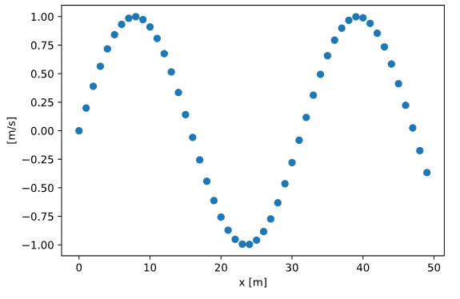
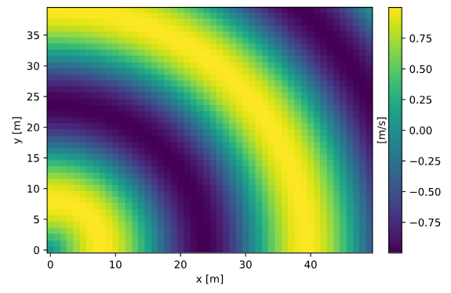
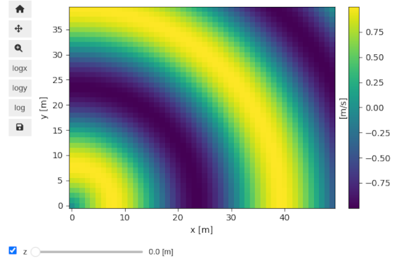
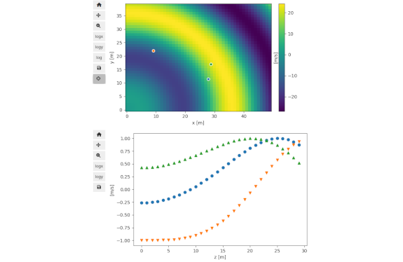
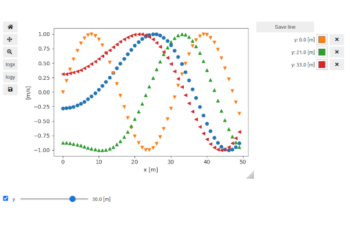
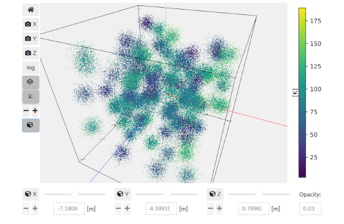
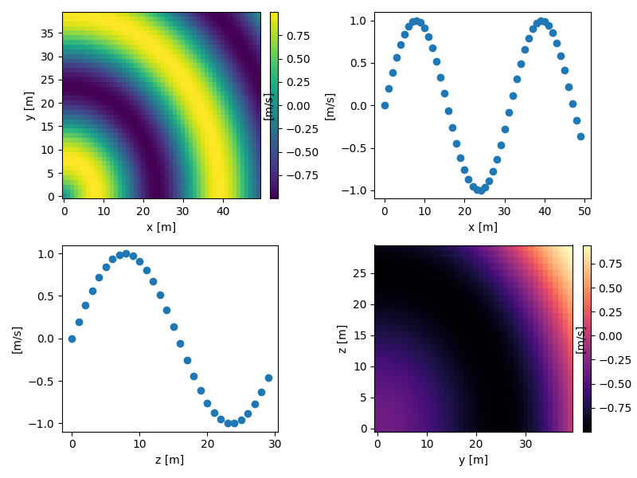
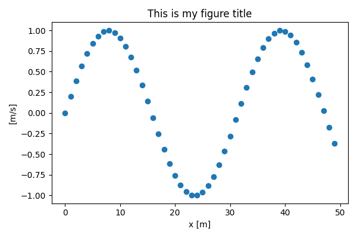
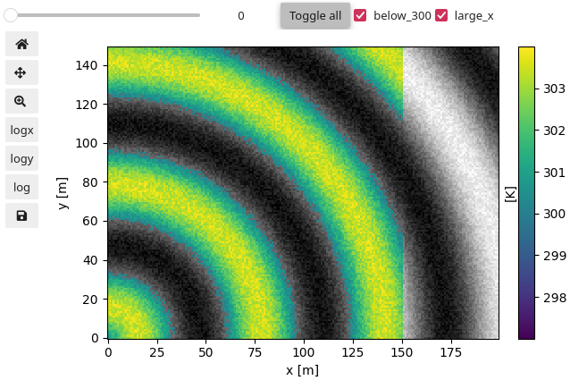
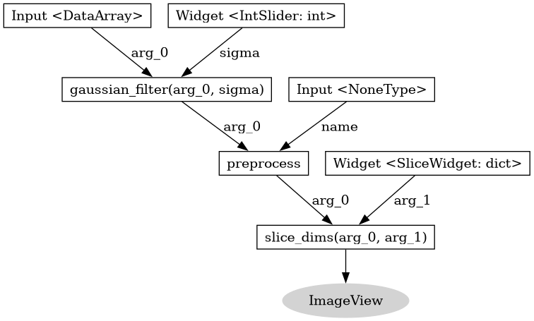

User guide# Getting started# Installation Overview Numpy, Pandas, and Xarray Saving figures to disk Plot Types# Line plot  Image plot  Slicer plot  Inspector plot  Super-plot  Scatter 3D plot  Custom figures# Subplots / Tiled plots  Tweaking figures  Building custom interfaces  Graph and node tips 